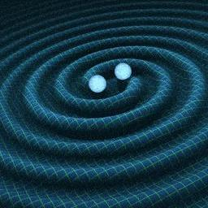
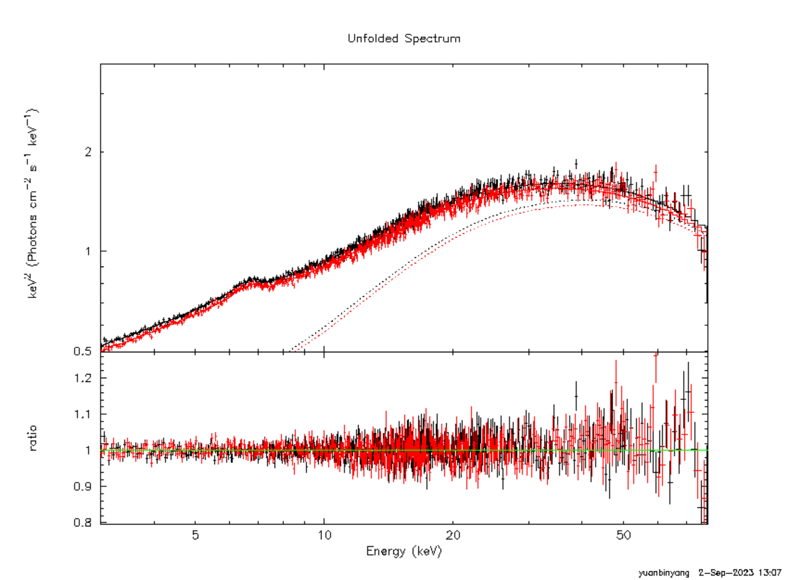
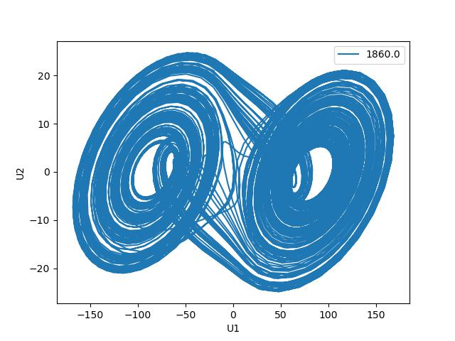
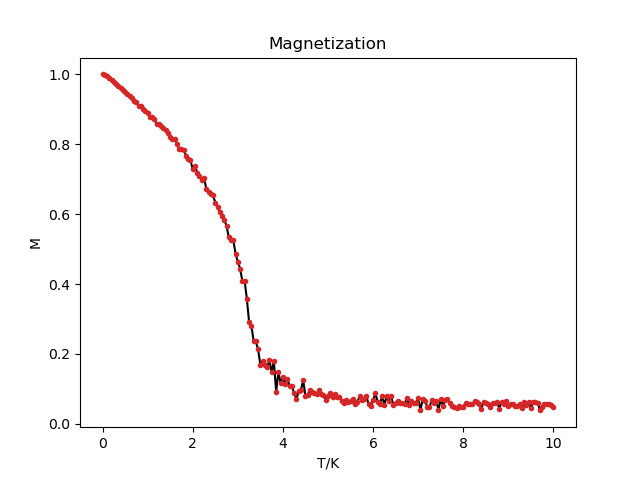

Hello! I am Yuanbing Yang. I graduated from Fudan University in June 2024 with a Bachelor degree in Physics. Currently I'm in my GAP year and actively seeking for opportunuties to attend a master program in Science and Technology, aiming to prepare myself better for future work.
Born and raised in Kunming in Yunnan Province, I rarely went out of this place before the age of 18. The following four years in university brought me progress in my expertise, but heavy academic workload and the 3-year pandemic made me neglect to connect to the true society. So after graduation, I chose not to rush into the next stage of degree pursuit but to slow down my pace to experience the real world. In the past year, I travelled domestically and abroad, met and communicated with people in different professions, read some books, wrote my own novel, etc. I explored myself freely, reflected my meritocracy in my past life and thought about questions that I didn't have time to consider.
Now I have got a broader horizon and realized my true desire about career and life—exploiting what I've learned to create something new in the real world if possible and doing good to others. With these cognitions, I'm more steadfast to embrace the future world!
Thank you for visiting my website. Feel free to contact me if you're interested in anything I post.

September 2020 - June 2024
GPA: 3.62 / 4.0 ( 91 / 100 ) Ranking: Top 15%
- Mathematical Foundations: Calculus, Linear Algebra, Probability and Statiatics, Mathematical Methods in Physics, Group Theory, Differential Geometry
- Computer Basics: Python Programming, Computational Physics
- Graduate Courses: Advanced Quantum Mechanics, Quantum Field Theory, Gauge Theories, Partical Physics, Solid State Physics, Advanced Electrodynamics, Physical Biology
September 2017 - July 2020

- Review on the post-Newtonian(PN) formalism and the effective one-body(EOB) formalism
- Discuss the application of PN and EOB methods for the calculations of effective spin and outline the further calculation process to obtain the modified constraints on KRZ metric

- Fit spectra of GS1354-645 and EXO1846-031 using Nustar data with chosen combination of astrophysical models which contain two corona
- Compared the AICc of two-corona models with one-corona standard case and found that two corona models can fit better the X-ray spectral data of GS1354-645 but cannot fit better for EXO1846-031

- Construct Chua's Circuit in the laboratory, obtain the basic parameters of the circuit and observe chaos phenomena and record U-t data
- Simulate the U-t data through the theoretical differential equations of Chua's Circuit and reproduce the phase graphs observed in the laboratory
- Analyse and compare the U-t data from lab and simulation

- Aim to calculate the Curie temperature of the three-demensional face-centered cubic lattice using the Heisenberg spin model.
- Employ the Metropolis Algorithm to produce the Markov Chain of the lattice's spin structure under each specific temperature and obtain the average spin after equilibrium.
- Plot the M-T figure and get the simulated Curie temperature is approximately 4K.
July 2022 - June 2024
- Data Analysis: Analyse the Nustar spectral data of black holes GS1354-645 and EXO1846-031 to test Two-Corona model hypothesis under the Linux operation system
- GW Test Model Construction: Searching for ways to include black hole spins to test the Kerr hypothesis.